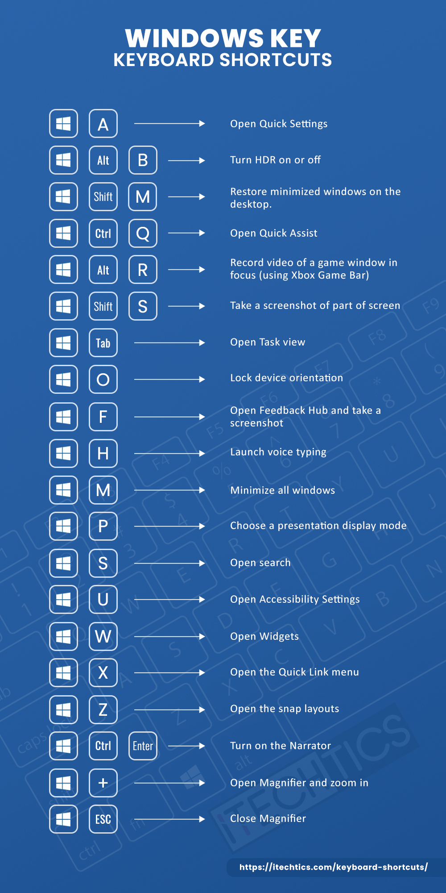

7. Elastyczność i efektywność użytkowania
EN: Flexibility and efficiency of use. Shortcuts — hidden from novice users — may speed up the interaction for the expert user such that the design can cater to both inexperienced and experienced users. Allow users to tailor frequent actions.
PL: Elastyczność i efektywność użytkowania. Skróty – niewidoczne dla początkujących – mogą przyspieszyć pracę zaawansowanym użytkownikom, dzięki czemu system odpowiada potrzebom obu grup. Pozwól użytkownikom dostosowywać częste akcje.
Przykład 1: Strona Internetowa (Desktop)

Uzasadnienie: Obsługa skrótów klawiszowych (np. Ctrl+S) pozwala ekspertom pracować szybciej, nie utrudniając pracy początkującym.
Przykład 2: Aplikacja Mobilna

Uzasadnienie: Możliwość przesuwania kursoru (np. przesunięcie w lewo) pozwala dopasować tekst za pomocą tylko spacji.